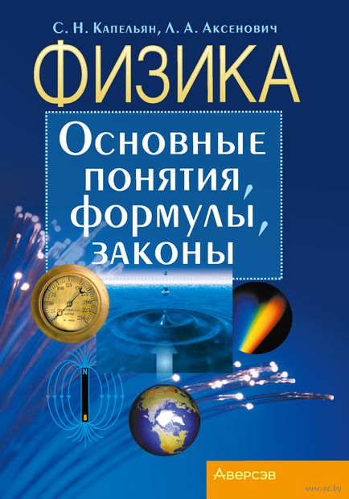
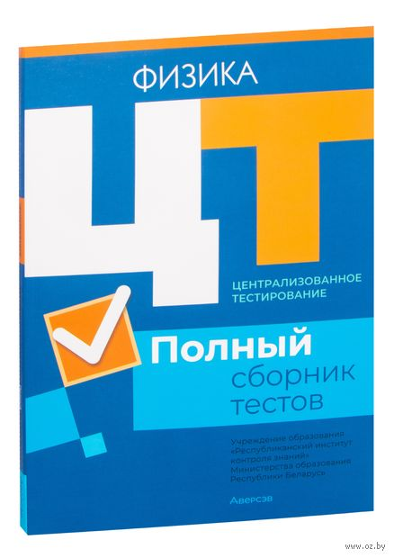
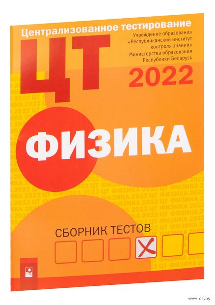
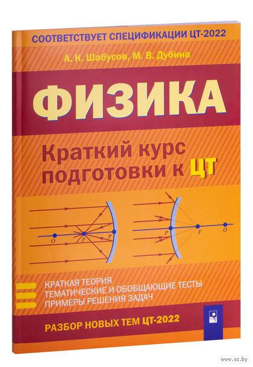
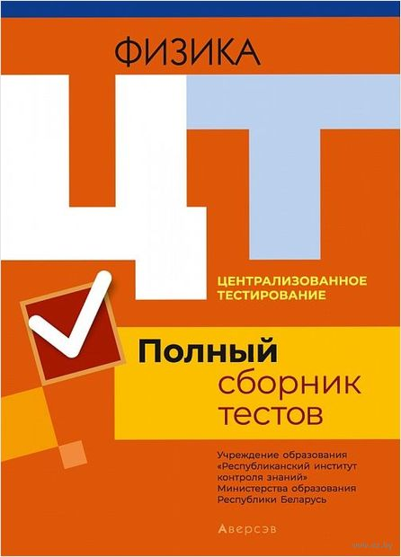
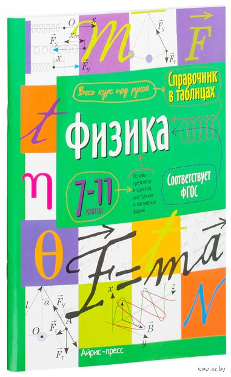
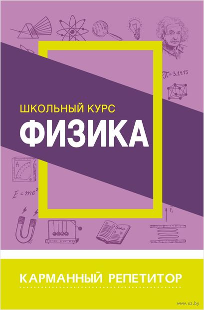

-
Физика.Пособие для подготовки к ЦТ
Семен Капельян, В. Малашонок - 2022г.Пособие содержит основные физические понятия, законы и формулы, а также тестовые задания, которые охватывают все типы задач, предлагаемые абитуриентам и выпускникам школ на ЦТ по физике.
В конце книги приведены три варианта проверочных заданий "Проверь себя" и восемь вариантов итоговых тестов, а также табличные данные. Издание актуально в 2023/2024 учебном году. -

Физика.ЦТ.Тренажёр🕊️
Владимир Дорофейчик, В. Жилко - 2022г.Пособие включает тематические тесты, обобщающие тесты и решения тематических тестов. В начале тематических тестов приводятся краткие теоретические сведения. В конце пособия даются ответы. Издание поможет закрепить и углубить знания, усовершенствовать навыки решения тестовых задач при подготовке к централизованному тестированию, а также подготовиться к олимпиадам. Адресуется абитуриентам и учащимся учреждений общего среднего образования.
-

Физика. Основные понятия, формулы, законы 🕊️
Л. Аксенович, Семен Капельян - 2023г.В пособии конспективно изложен основной материал курса физики в соответствии с содержанием действующей учебной программы для учреждений общего среднего образования и учебников. Книга поможет восстановить в памяти, конкретизировать и систематизировать ранее изученное.
-

Централизованное тестирование. Физика. Полный сборник тестов. 2017-2021 годы
2022 г.Полный сборник тестов содержит 50 вариантов тестовых заданий, предложенных Республиканским институтом контроля знаний при проведении централизованного тестирования в 2017-2021 годах. Ко всем заданиям даны ответы. Рекомендуется учащимся старших классов и абитуриентам для самостоятельной подготовки к централизованному тестированию 2023 года, а также учителям учреждений общего среднего образования, преподавателям подготовительных курсов и репетиторам.
-

Централизованное тестирование. Физика. Сборник тестов. 2022 год
Пособия для подготовки к тестированию 2022 г.Сборник содержит тестовые задания по физике, предложенные абитуриентам при проведении централизованного тестирования в 2022 году. Ко всем заданиям даны ответы. В издании приведены образцы бланка ответов, использование которых поможет приобрести навыки заполнения бланка и избежать технических ошибок при оформлении ответов на тестировании.
-

Физика. Краткий курс подготовки к ЦТ
М. Дубина, А. Шабусов, 2022 г.Пособие предназначено для подготовки к централизованному тестированию в сжатые сроки. Оно включает необходимую теорию, тематические и обобщающие тесты, а также примеры решения наиболее сложных задач из каждого теста. Особое внимание уделено темам, добавленным в спецификацию ЦТ по физике в 2022 году. В конце пособия приведены ответы и справочные данные.
-

Централизованное тестирование. Физика. Полный сборник тестов. 2016-2020 годы
Сборники тестов ЦТ 2021 г.Полный сборник тестов содержит 50 вариантов тестовых заданий, предложенных Республиканским институтом контроля знаний при проведении централизованного тестирования в 2016-2020 годах. Рекомендуется учащимся старших классов и абитуриентам для самостоятельной подготовки к централизованному тестированию 2022 года, а также учителям учреждений общего среднего образования, преподавателям подготовительных курсов и репетиторам.
-

Физика. 7-11 класс
Справочник в таблицах 2016 г.Справочник содержит весь курс физики для школьников. Материал представлен в виде таблиц, каждая таблица на отдельной странице. Благодаря такой наглядной подаче усвоить тему будет легко при любом уровне подготовленности. Быстро ориентироваться в пособии поможет удобная поисковая система. Клапаны книги могут быть использованы для записи самых необходимых формул или физических законов, для заметок во время занятий и как закладки.
-

Школьный курс. Физика
Т. Соловьёва, 2022Карманный репетитор это: удобное пособие для старшеклассников и абитуриентов; выполнение домашних заданий, контрольных и проверочных работ; сдача экзаменов; подготовка к тестированию.